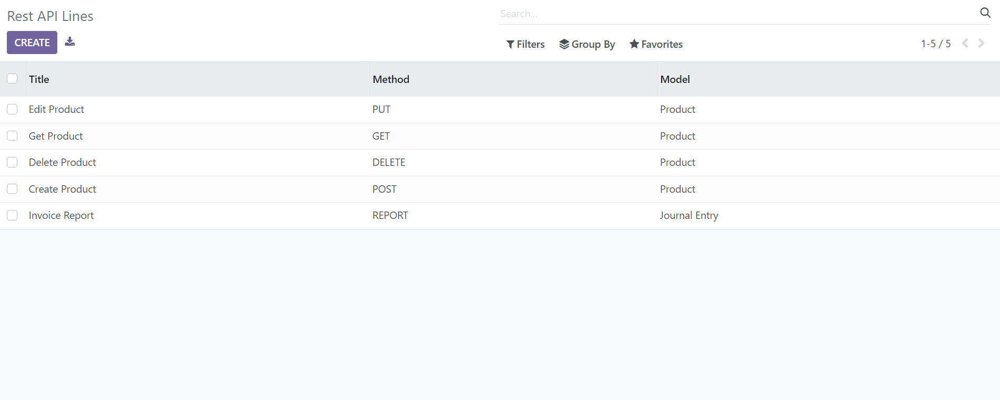

Key Features:
RESTful API Creation
Easily generate RESTful APIs within Odoo to facilitate data creation, consumption, editing, and deletion.
Customizable Endpoints
Tailor API endpoints to match your specific data requirements.
Secure Authentication
A robust authentication mechanisms to ensure data security.
Data Filtering and Pagination
Enable data filtering and pagination options for efficient data retrieval.
Documentation Generation
Automatically generate Instant API documentation for ease of use and integration.
Responsive Design
Responsive design for Desktop, Tablet, and Mobile phones
Odoo Connect Screen:



User Guide:
Installation
1. Copy and paste it to your Add-ons folder.
2. Click on Update Apps list from the menu and now Odoo Connect will appear in App list.
3. Go to Apps menu, search for 'odoo connect' and click Install button.
4. You are ready for use Odoo Connect.
Create your first API


Authentication
Creating a Dashboard Item as a Tile:
If you select the Dashboard Item Type as a Tile, pop screen or a dashboard item creation window appears which asks you to fill a number of fields. The ones highlighted in purple are mandatory to fill, model field is the important one in order to save the dashboard item. Once the Model is selected, you will notice two configurations further namely Data and Display. Data tab will allow users to add/select the data for which they wish to display, whereas Display tab will allow a user to configure the dashboard item on the basis of its color, layout etc.

Once the Model is selected, you can define the Domain for the dashboard item if you wish to do the same. For Example: If your selected Model is Sale Order, you can define the Domain as Sale Order where the total amount is greater than 100.

Once you click on the “Display” tab, you will notice the following configuration options


Select the Theme as per your choice. If you wish to choose your own color, you can do the same through Background Color. You can even change the Transparency of the chosen color, you can also change the Font Color of the dashboard item and adjust its Transparency as per your choice.

Choose the icon for your dashboard item. If you wish to choose from our Default Icons, choose the Default Icons option and if you wish to upload your own, choose Upload Icon option.
If you have chosen the Default Icons option, the below pop-up window will be displayed. Choose the icon you like and if you wish to explore more icons, search them in the search bar.
See the Preview of your finished dashboard item. If you like what you see, proceed to save the same.

| Category | Label | Description | Condition | ||||
|---|---|---|---|---|---|---|---|
| General | Name | Label which will be displayed on the tile | |||||
| Model | Select the model/table on which you want to create your item | ||||||
| Company | Display tile to particular company | ||||||
| Type | Select the type as Tile | ||||||
| Preview | Live Preview of the Tile | ||||||
| Data | Record Type | Allows you to show your data/record as a Count, Sum or Average | |||||
| Record Field | Allow you to select the field on which to apply the sum or average operation | It will only visible when Record Type is Sum or Average | |||||
| Record Value | Display exact value depending upon selected Record Type and Record Field | ||||||
| Domain | Allow you to add conditions to filter out your Data | This odoo default widget is only availabel in Odoo 11, 12 version. Odoo 10 customer will need technical knowledge to add conditions. | |||||
| Date Filter Field | Field on which date filter will work | Only date fields will be displayed | |||||
| Date Filter Selection | Select the Date filter for which you want to filter out the your item records/data | If None option is selected then only Main Dashboard page date filter will work. | |||||
| Start Date | Option to set start date for custom date filter | Only visible when Date filter selection is set to Custom Filter | |||||
| End Date | Option to set end date for custom date filter | Only visible when Date filter selection is set to Custom Filter | |||||
| Display | Theme | Pre configured set of 5 different colors i.e White, Blue, Green, Red and Yellow. Select the Theme as per your choice | Get overridens if custom values are set in Background Color, Font Color & Icon Color | ||||
| Background Color | Allows you to set the background color from a color pop-up window. Also provides option to set transparency. | ||||||
| Font Color | Allows you to set the font color from a color pop-up window. Also provides option to set transparency. | ||||||
| Icon Option |
|
|
|||||
| Icon | We have provided 29 pre-loaded Default Font Awesome 4.7.0 icons | Use search bar to search for other available Font Awesome icons. | |||||
| Icon Color | Allows you to choose the color of the icon. Also, provides option to set transparency. | Only visible when Icon Option chosen as Default | |||||
| Actions | Client Action | Allow you to choose client Client Action field | |||||
| client Action Field | Allows you to set the action of the item | Only visible when client action is selected | |||||
| client Action Field | Allows you to set the client action on the item, chosen by the client | Only visible when client action is selected | |||||
| Item Action | Allows you to set the action of the item | ||||||
| Show record | Allow you to see the records on performing action on the item | Item must be save to reflect the changes | |||||
| Auto Update | Auto live update type |
|
|
||||
| Show live update pop up | Allow you to see the notification pop of live updates of records | Update at live instance must be activated | |||||
| Set update interval | Allow you to select the the interval to update the data | Update it after selected interval must be selected |
Creating a Dashboard Item as a Bar Chart:


For example: Let’s select the Model as Sales Order and keep its Measures as Total (sale.order), Taxes (sale.order) and Untaxed Amount(sale.order) and Line Measure as Taxes (sale.order) and Untaxed Amount (sale.order) and Currency Rate (sale.order)
Measures and Line Measure will show list of fields related to the chosen model on the basis of following attributes:
Once you select the Data Type as Sum, Count or Average, it will start displaying the data respectively.


Select the Sub Group By field to further group your Group By field data, for example: let’s select the Group By as Company (sale.order).
You can also select the Sort By Field, Sort Order, and Record Limit option specific to the dashboard item you’re currently making

You also have the feature of defining the Chart Color Palette for your dashboard item under Display tab, there are four predefined options i.e. Default, Cool, Warm and Neon.
The same can also be defined from the main dashboard by clicking at the brush icon named Color Palette on each individual dashboard item whose type is charts.


If you input the value for “Standard Target” option, then you will be able to view your Data target as per the input the value, as shown above screenshot.
If you wish to see the target with different data and date range, then you need to add them by clicking on “Add Line”. on clicking the Add Line, you will be asked to select the Date and the value for which you want to see the target.

You can add multiple lines to see the target values as per your need.

Once all the mandatory details are filled, you can preview your dashboard item in the Preview column and if everything looks good, then proceed to save.
| Category | Label | Description | Condition | ||||
|---|---|---|---|---|---|---|---|
| General | Name | Label which will be displayed on header of item | |||||
| Model | Select the model/table on which you want to create your item | ||||||
| Company | Display Bar Chart to particular company | ||||||
| Type | Select the type as Bar Chart | ||||||
| Stacked Bar Chart | Option to convert bar chart in stacked bar chart | ||||||
| Preview | Live Preview of the Bar Chart | ||||||
| Data | Measures | Allows you to select the fields for which you want to perform the calculations as per the selected Model | Only visible when Data type is Sum or Average | ||||
| Line Measure | Allows you to select the fields for which you want to display lines on bar chart | Only visible when Data type is Sum or Average | |||||
| Data Type | Allows you to display your data as Sum, Count or Average | ||||||
| Group By | Allows you to group your selected Measure fields data | Enables Target tab if Date/Datetime field is selected | |||||
| Group By Date | Allows you to select the date option by which you wish to group the data as per selected date type group by field. Options are Day, Week, Month, Quarter, Year. | Only visible when date/datetime field is chosen in Group By | |||||
| Sub Group By | Allows you to further group your Group By field data. | Only visible when date/datetime field is chosen in Sub Group By | |||||
| Sub Group By Date | Allows you to select the date option by which you wish to group the grouped data as per selected date type sub group by field. Options are Day, Week, Month, Quarter, Year. | It will only visible when Sub Group By is chosen date time field | |||||
| Sort By Field | It will allow you to select the field on which you want to sort the records/Data | ||||||
| Sort Order | Allows you to sort your data in Ascending or Descending order | ||||||
| Record Limit | Allows you to set limit to your records/data | ||||||
| Domain | Allows you to add conditions to filter out your Data | This odoo default widget is only availabel in Odoo 11, 12 version. Odoo 10 customer will need technical knowledge to add conditions. | |||||
| Date Filter Field | Field on which date filter will work | Only date fields will be displayed | |||||
| Date Filter Selection | Select the Date filter for which you want to filter out the your item records/data | If None option is selected then only Main Dashboard page date filter will work. | |||||
| Start Date | Option to set start date for custom date filter | Only visible when Date filter selection is set to Custom Filter | |||||
| End Date | Option to set end date for custom date filter | Only visible when Date filter selection is set to Custom Filter | |||||
| Display | Chart Color Palette | It will allow you to select the color from 4 pre-defined options i.e Default, Cool, Warm and Neon | |||||
| Target | Enable Target | On enabiling the option, you will be able to see the Target values | Target tab is only visible when Date/Datetime field is selected in Group By | ||||
| Show Target as Line | Allows you to set your target values which you wish to see as a line on chart. | Visible only when you enables the Enable Target | |||||
| Standard Target | Default target value if any value is empty for particular date period | ||||||
| Date | Allows you to set the Date on which you wish to see your Target values. | Visible only when you check the Enable Target option | |||||
| Value | Allows you to set the Target value respective to the date. | Visible only when you check the Enable Target option | |||||
| Actions | Action lines | Allow you to choose different data at a time to perform action, to go in deep ypou can choose number of lines as per your need | This field is applicable on every type except tile,kpi and list | ||||
| client Action Field | Allows you to set the client action on the item, chosen by the client | Only visible when client action is selected | |||||
| Item Action | Allows you to set the action of the item | ||||||
| Show record | Allow you to see the records on performing action on the item | Item must be save to reflect the changes | |||||
| Auto Update | Auto live update type |
|
|
||||
| Show live update pop up | Allow you to see the notification pop of live updates of records | Update at live instance must be activated | |||||
| Set update interval | Allow you to select the the interval to update the data | Update it after selected interval must be selected |
Creating a Dashboard Item as a Horizontal Bar Chart:

| Category | Label | Description | Condition |
|---|---|---|---|
| General | Name | Label which will be displayed on header of item | |
| Model | Select the model/table on which you want to create your item | ||
| Company | Display Horizontal Bar Chart to particular company | ||
| Type | Select the type as Horizontal Bar Chart | ||
| Stacked Bar Chart | Option to convert Horizontal Bar Chart in stacked bar chart | ||
| Preview | Live Preview of the Horizontal Bar Chart | ||
| Data | Measures | Allows you to select the fields for which you want to perform the calculations as per the selected Model | Only visible when Data type is Sum or Average |
| Line Measure | Allows you to select the fields for which you want to display lines on bar chart | Only visible when Data type is Sum or Average | |
| Data Type | Allows you to display your data as Sum, Count or Average | ||
| Group By | Allows you to group your selected Measure fields data | Enables Target tab if Date/Datetime field is selected | |
| Group By Date | Allows you to select the date option by which you wish to group the data as per selected date type group by field. Options are Day, Week, Month, Quarter, Year. | Only visible when date/datetime field is chosen in Group By | |
| Sub Group By | Allows you to further group your Group By field data. | Only visible when date/datetime field is chosen in Sub Group By | |
| Sub Group By Date | Allows you to select the date option by which you wish to group the grouped data as per selected date type sub group by field. Options are Day, Week, Month, Quarter, Year. | It will only visible when Sub Group By is chosen date time field | |
| Sort By Field | It will allow you to select the field on which you want to sort the records/Data | ||
| Sort Order | Allows you to sort your data in Ascending or Descending order | ||
| Record Limit | Allows you to set limit to your records/data | ||
| Domain | Allows you to add conditions to filter out your Data | This odoo default widget is only availabel in Odoo 11, 12 version. Odoo 10 customer will need technical knowledge to add conditions. | |
| Date Filter Field | Field on which date filter will work | Only date fields will be displayed | |
| Date Filter Selection | Select the Date filter for which you want to filter out the your item records/data | If None option is selected then only Main Dashboard page date filter will work. | |
| Start Date | Option to set start date for custom date filter | Only visible when Date filter selection is set to Custom Filter | |
| End Date | Option to set end date for custom date filter | Only visible when Date filter selection is set to Custom Filter | |
| Display | Chart Color Palette | It will allow you to select the color from 4 pre-defined options i.e Default, Cool, Warm and Neon | |
| Target | Enable Target | On enabiling the option, you will be able to see the Target values | Target tab is only visible when Date/Datetime field is selected in Group By |
| Show Target as Line | Allows you to set your target values which you wish to see as a line on chart. | Visible only when you enables the Enable Target | |
| Standard Target | Default target value if any value is empty for particular date period | ||
| Date | Allows you to set the Date on which you wish to see your Target values. | Visible only when you check the Enable Target option | |
| Value | Allows you to set the Target value respective to the date. | Visible only when you check the Enable Target option |
Creating a Dashboard Item as a Line Chart:

| Category | Label | Description | Condition |
|---|---|---|---|
| General | Name | Label which will be displayed on header of item | |
| Model | Select the model/table on which you want to create your item | ||
| Company | Display Line Chart to particular company | ||
| Type | Select the type as Line Chart | ||
| Preview | Live Preview of the Line Chart | ||
| Data | Measures | Allows you to select the fields for which you want to perform the calculations as per the selected Model | Only visible when Data type is Sum or Average |
| Data Type | Allows you to display your data as Sum, Count or Average | ||
| Group By | Allows you to group your selected Measure fields data | Enables Target tab if Date/Datetime field is selected | |
| Group By Date | Allows you to select the date option by which you wish to group the data as per selected date type group by field. Options are Day, Week, Month, Quarter, Year. | Only visible when date/datetime field is chosen in Group By | |
| Sub Group By | Allows you to further group your Group By field data. | Only visible when date/datetime field is chosen in Sub Group By | |
| Sub Group By Date | Allows you to select the date option by which you wish to group the grouped data as per selected date type sub group by field. Options are Day, Week, Month, Quarter, Year. | It will only visible when Sub Group By is chosen date time field | |
| Sort By Field | It will allow you to select the field on which you want to sort the records/Data | ||
| Sort Order | Allows you to sort your data in Ascending or Descending order | ||
| Record Limit | Allows you to set limit to your records/data | ||
| Domain | Allows you to add conditions to filter out your Data | This odoo default widget is only availabel in Odoo 11, 12 version. Odoo 10 customer will need technical knowledge to add conditions. | |
| Date Filter Field | Field on which date filter will work | Only date fields will be displayed | |
| Date Filter Selection | Select the Date filter for which you want to filter out the your item records/data | If None option is selected then only Main Dashboard page date filter will work. | |
| Start Date | Option to set start date for custom date filter | Only visible when Date filter selection is set to Custom Filter | |
| End Date | Option to set end date for custom date filter | Only visible when Date filter selection is set to Custom Filter | |
| Display | Chart Color Palette | It will allow you to select the color from 4 pre-defined options i.e Default, Cool, Warm and Neon | |
| Target | Enable Target | On enabiling the option, you will be able to see the Target values | Target tab is only visible when Date/Datetime field is selected in Group By |
| Standard Target | Default target value if any value is empty for particular date period | ||
| Date | Allows you to set the Date on which you wish to see your Target values. | Visible only when you check the Enable Target option | |
| Value | Allows you to set the Target value respective to the date. | Visible only when you check the Enable Target option |
Creating a Dashboard Item as a Line Chart:
| Category | Label | Description | Condition |
|---|---|---|---|
| General | Name | Label which will be displayed on header of item | |
| Model | Select the model/table on which you want to create your item | ||
| Company | Display Line Chart to particular company | ||
| Type | Select the type as Line Chart | ||
| Preview | Live Preview of the Line Chart | ||
| Data | Measures | Allows you to select the fields for which you want to perform the calculations as per the selected Model | Only visible when Data type is Sum or Average |
| Data Type | Allows you to display your data as Sum, Count or Average | ||
| Group By | Allows you to group your selected Measure fields data | Enables Target tab if Date/Datetime field is selected | |
| Group By Date | Allows you to select the date option by which you wish to group the data as per selected date type group by field. Options are Day, Week, Month, Quarter, Year. | Only visible when date/datetime field is chosen in Group By | |
| Sub Group By | Allows you to further group your Group By field data. | Only visible when date/datetime field is chosen in Sub Group By | |
| Sub Group By Date | Allows you to select the date option by which you wish to group the grouped data as per selected date type sub group by field. Options are Day, Week, Month, Quarter, Year. | It will only visible when Sub Group By is chosen date time field | |
| Sort By Field | It will allow you to select the field on which you want to sort the records/Data | ||
| Sort Order | Allows you to sort your data in Ascending or Descending order | ||
| Record Limit | Allows you to set limit to your records/data | ||
| Domain | Allows you to add conditions to filter out your Data | This odoo default widget is only availabel in Odoo 11, 12 version. Odoo 10 customer will need technical knowledge to add conditions. | |
| Date Filter Field | Field on which date filter will work | Only date fields will be displayed | |
| Date Filter Selection | Select the Date filter for which you want to filter out the your item records/data | If None option is selected then only Main Dashboard page date filter will work. | |
| Start Date | Option to set start date for custom date filter | Only visible when Date filter selection is set to Custom Filter | |
| End Date | Option to set end date for custom date filter | Only visible when Date filter selection is set to Custom Filter | |
| Display | Chart Color Palette | It will allow you to select the color from 4 pre-defined options i.e Default, Cool, Warm and Neon | |
| Target | Enable Target | On enabiling the option, you will be able to see the Target values | Target tab is only visible when Date/Datetime field is selected in Group By |
| Standard Target | Default target value if any value is empty for particular date period | ||
| Date | Allows you to set the Date on which you wish to see your Target values. | Visible only when you check the Enable Target option | |
| Value | Allows you to set the Target value respective to the date. | Visible only when you check the Enable Target option |